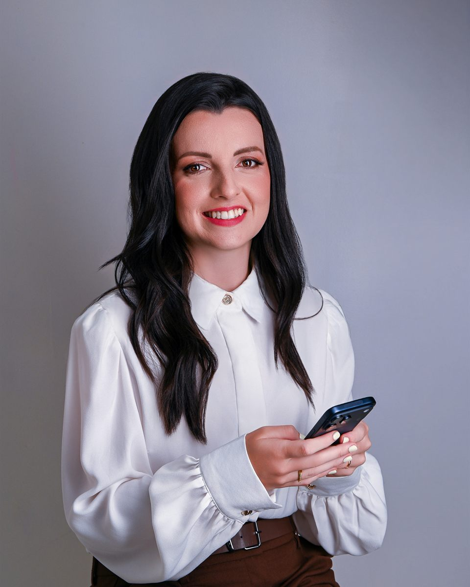
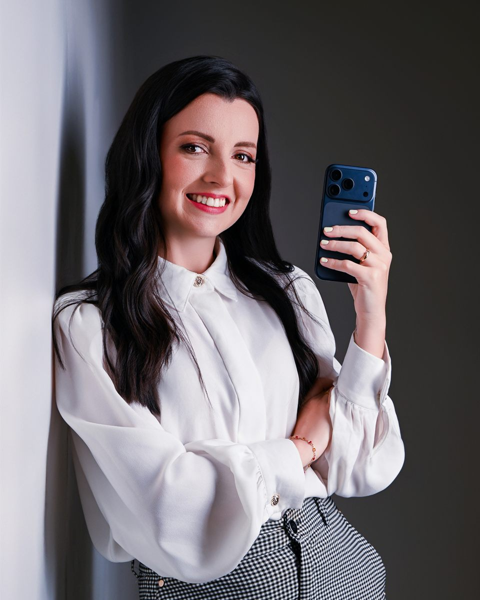

Falta de visibilidade
O seu trabalho acontece, mas poucas pessoas ficam sabendo. A assessoria leva a sua mensagem aos veículos certos.
Assessoria de Imprensa e Comunicação Estratégica
Há 10 anos conectando empresas, instituições e lideranças aos veículos de comunicação que importam. Do interior de Santa Catarina ao Vaticano, um trabalho pautado por relacionamento, método e resultado.


01 · Sobre
Jornalista, assessora de imprensa e especialista em comunicação estratégica. Ao longo de uma década, construiu um trabalho dedicado a fortalecer a imagem de empresas, instituições, profissionais e lideranças, ampliando a visibilidade na imprensa e posicionando cada cliente como referência na sua área de atuação.
Experiência internacional
Em 2018, integrou a cobertura jornalística no Vaticano, acompanhando agendas e eventos e colaborando com a produção de conteúdo para o portal Vatican News e a Rádio Vaticano, uma experiência internacional que marca a sua trajetória.
Seu trabalho reúne conhecimento da dinâmica dos veículos de comunicação, relacionamento com a imprensa regional e estadual e planejamento estratégico voltado a resultados. Atende com linguagem clara, agilidade na execução e foco em credibilidade, autoridade e reputação.
02 · Para quem
A assessoria de imprensa existe para transformar o seu trabalho em reputação. Veja o que ela resolve:
O seu trabalho acontece, mas poucas pessoas ficam sabendo. A assessoria leva a sua mensagem aos veículos certos.
Construção de uma percepção sólida, coerente e profissional diante do público e da imprensa.
Relacionamento real com jornalistas e veículos, abrindo espaço para a sua pauta.
Gestão de crises de comunicação com estratégia, agilidade e cuidado com a reputação.
Para quem: empresas, instituições públicas, lideranças políticas, eventos e profissionais liberais.
03 · Serviços
Um trabalho completo de comunicação, do planejamento à execução.
Textos, releases e materiais com padrão de imprensa.
Envio estratégico para os veículos e jornalistas certos.
Construção e manutenção de contatos com jornalistas e redações.
Sugestão e acompanhamento de pautas de interesse.
Da articulação ao suporte no dia.
Registro e divulgação jornalística de ações e acontecimentos.
Resposta estratégica para proteger a reputação.
Acompanhamento e organização das publicações.
Alinhamento da assessoria às ações institucionais e de marketing.
04 · Diferenciais
Conhecimento real da dinâmica jornalística e contatos construídos ao longo de 10 anos.
Cada ação de comunicação tem propósito, direção e foco em reputação.
Proximidade, agilidade na execução e linguagem clara.
Construção de credibilidade e autoridade de forma consistente.
05 · Trajetória
Profissional da área de comunicação, com atuação em jornalismo, assessoria de imprensa e comunicação institucional. Experiência na produção de conteúdo jornalístico, planejamento de pautas, relacionamento com veículos de comunicação e desenvolvimento de estratégias de posicionamento.
Em 2018, viveu uma experiência internacional de destaque, com cobertura jornalística no Vaticano para o portal Vatican News e a Rádio Vaticano. Ao longo da carreira, desenvolveu trabalhos de comunicação para instituições públicas e privadas, empresas, entidades e representantes políticos, atuando na divulgação de projetos, iniciativas, investimentos e ações institucionais.
Produção de conteúdo jornalístico e planejamento de pautas.
Cobertura jornalística para o portal Vatican News e a Rádio Vaticano.
Comunicação para instituições, empresas, entidades e representantes políticos.
Assessoria de imprensa e comunicação estratégica em Santa Catarina.
06 · Experiência
Experiência com instituições públicas, privadas e lideranças de Santa Catarina.
07 · Imprensa
Um espaço para a imprensa acessar os releases e materiais produzidos. Um ponto de encontro entre o trabalho da Amábile e os veículos de comunicação.
Em breve, os primeiros releases por aqui.
Conte o seu momento e o seu objetivo. A partir daí, montamos a estratégia de comunicação certa para você.
Falar com a Amábile no WhatsApp